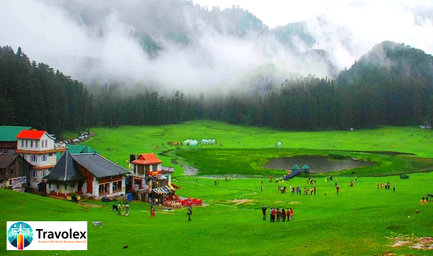

16th May
Nestled in the serene lap of the Dhauladhar range in Himachal Pradesh, Dharamshala is a
peaceful hill station
known for its spiritual ambience, Tibetan culture, and scenic beauty. Whether you're an adventure seeker, a spiritual wanderer, or someone simply looking to escape the chaos of city life, Dharamshala has something for everyone. At Travolex, we’ve curated thetop tourist places in Dharamshala
that offer a blend of culture, nature, and tranquility.1. McLeod Ganj – The Little Lhasa
Also known as “Little Lhasa”, McLeod Ganj is the spiritual and cultural heart of Dharamshala. Home to the 14th Dalai Lama and a vibrant Tibetan community, this quaint town is dotted with monasteries, Tibetan markets, and cozy cafes. The Namgyal Monastery, the Dalai Lama’s residence, is the centerpiece here, offering visitors a glimpse into Buddhist philosophy and peaceful meditation.2. Bhagsu Waterfall and Temple:
A short trek from McLeod Ganj leads you to Bhagsu Waterfall, one of the most picturesque spots in Dharamshala. Cascading down from a height of around 30 feet, the waterfall is surrounded by lush greenery and rocky cliffs. Just before the falls lies the Bhagsunath Temple, dedicated to Lord Shiva, making it a spiritual and scenic retreat.3. Triund Trek – A Himalayan Adventure
4. Dal Lake – A Peaceful Escape
Not to be confused with its namesake in Kashmir, Dal Lake in Dharamshala is a small, serene lake surrounded by tall deodar trees. It's an ideal spot for a peaceful walk or a family picnic. Every September, the lake hosts a fair near the Shiva Temple on its banks, drawing locals and tourists alike.5. Norbulingka Institute – Preserving Tibetan Art
Founded to preserve Tibetan culture, the Norbulingka Institute in Sidhpur is a living museum of Tibetan craftsmanship. Visitors can observe traditional Thangka painting, wood carving, and tailoring by skilled artisans. The institute is also home to beautiful gardens, a temple, and a small café that serves authentic Tibetan dishes.6. Kangra Fort – A Historical Gem
Just a short drive fromDharamshala
, Kangra Fort is one of India’s oldest and most majestic forts. Built by the royal family of Kangra, it has withstood centuries of invasions and natural calamities. Today, the fort offers stunning views of the confluence of the Banganga and Majhi rivers, along with a journey into Kangra's royal past.7. Gyuto Monastery – The Voice of Tantra
Located in Sidhbari, the Gyuto Monastery is renowned for its tantric teachings and beautiful architecture. The monastery is known for its unique black-and-gold statues of Buddha and offers a serene environment for those interested in meditation or Buddhist philosophy. Don’t miss the morning chanting sessions for an immersive spiritual experience.Final Thoughts by Travolex
Dharamshala is more than just a tourist destination—it's a spiritual and cultural journey. From snow-covered peaks and sacred temples to ancient forts and artistic heritage, every corner of Dharamshala tells a story. At Travolex, we believe that travel is not just about places—it's about experiences. And Dharamshala offers experiences that stay with you long after your trip ends.So pack your bags, charge your camera, and get ready to explore the soul of Himachal Pradesh. Dharamshala is calling!